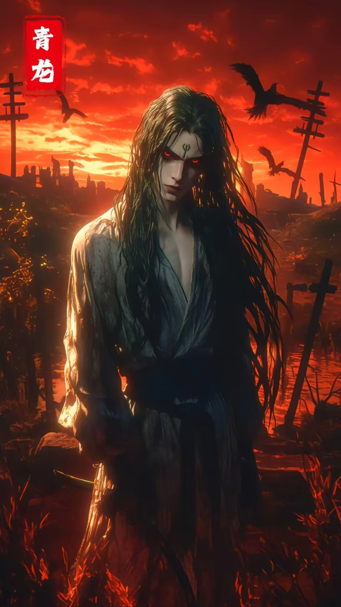

终焉之地 这里是故事的主要场景，是一座破败且充满末日废土气息的城市，生活着精神失常的“原住民”以及戴着动物面具的“十二生肖”，所有进入此地的人都是生前有“罪”的亡魂。轮回与记忆。终焉之地每十日进行一次轮回，所有人会在第十一天失去记忆复活，但极少数觉醒“回响”的人能带着记忆复活，“回响”作为一种超自然能力，是逃离的关键，且通常与信念或执念有关，其触发需要契机，过度使用会导致思维认知混乱.游戏与道参与者需参与涉及天地人三才和十二生肖的残酷死亡游戏，游戏分为人级、地级、天级，完成游戏可获得“道”，收集三千六百颗“道”曾被认为是逃离此地的条件，但实际上这是天龙编造的谎言.
